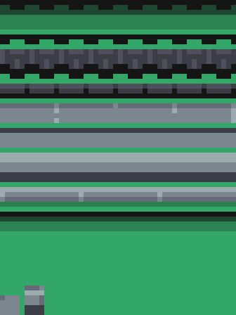
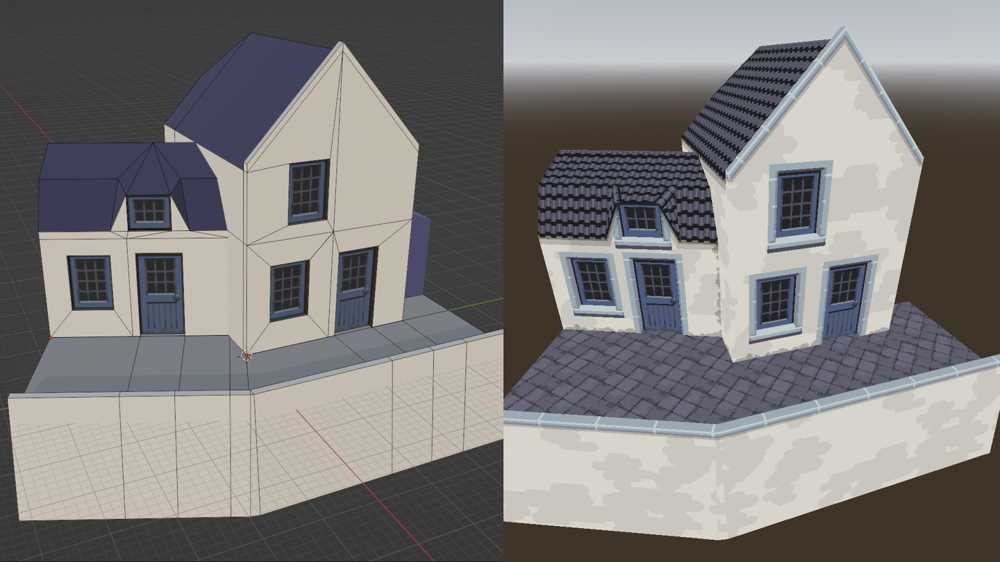

Workflow
At the time of writing, AutoTrimmer is still very new. I don't have a huge amount of experience with it myself yet. However, since I've got more experience than anyone else, I figure it's best to write down my thoughts on how to make environments with it.
Below, you can see my main creative project with AutoTrimmer so far. What you see took around three or four days of work. I am not a very fast artist and textures take me a long time, so a more experienced artist could probably do more in less time.
Getting started
To get started, you're going to need some textures for your surfaces and trims. For my church project, I used a mockup drawing to both establish the initial idea and get my first textures.
Mock-up drawing
Below is the original mockup drawing that I made for the project. It isn't much (just a house), and I ended up taking things in another direction, but it was enough to help me get started. I drew this from a videogamey perspective where everything is seen from the front and everything takes up a full square. This let me copy-paste a lot of the textures from the mockup. This way of working saved me from doing a lot of work twice: I could establish the idea and draw textures at the same time.

Extracting the textures
Figuring out the textures for surfaces is not that difficult. It's pretty obvious what the surface texture should be. On the other hand, for the trims, you need to pay special attention to all the changes that you make to the mockup to make the edges look nice.
In the drawing above, these are the trims that made it into the final project:
- Molding around the windows and doors. In the final project, the dark edges of the molding are on the inside, instead of on the outside.
- A roof ridge that's subtly different from the other rooftiles.
- The roof's eave, with a shadow casting onto the wall below it.
- A bit of grime at the bottoms of the walls.
There's also a couple of things that didn't make it in:
-
The stone lower half of the wall didn't make it in because I wasn't quite happy with the texture. If I had liked the texture better, I would have turned it into a surface that I could apply on the bottom parts of walls.
-
The wooden shed didn't get all the way to the final project. If you look very closely, you might be able to see that the lines inbetween the planks are darkened a little at the top and the bottom. Replicating that coloring was a little too complex. A simple trim with a dark line every so often would only work for the bottom edge of the shed, because the top edge beneath the roof is slanted.
With some shader work (vertex color tricks) this could be possible, but it felt like too much effort.
Tiling textures
Tiling textures should usually be about four or five meters large in the world. If the texture is meant to have a regular pattern (like floorboards or tiles) you might be able to get away with a smaller texture. On the other hand, if you have a huge 20 by 20 meter brick wall with nothing to break up the texture, you might want a larger texture so that you can make it less obvious that the texture is repeating.
There's also a tech art trick to make repeating textures less obvious. It's called “stochastic texture sampling”. However, the typical implementations of this trick won't work with pixel art, so unless you're an expert at shaders you may have a hard time getting it to work well.
Trimsheet
For your trimsheet, you need to take all of your trims, rotate them to be horizontal, and put them in an image. Below is an example. I made the background green so you can see it better — it used to be transparent.

Here's the trims from top to bottom:
- Four roof trims: The two up top are for the eave (which is the bottom end of the roof) The first one is for the wall side of the eave edge, the other is for the roof side of the eave edge. Then two different variants of roof ridges.
- Three trims for the molding: Side, top and bottom. The top trim is upside-down here. That's why it's shadow edge is up top.
- One trim for the coping.
- Another trim for the roof: This one is used for the rake, which is the slanted side of the roof.
There's also two corner textures in the bottom-left. Those are both used in the molding. The one on the left connects the top molding trim to the side trim, and the other one connects the bottom trim to the side trim.
Sidenote: weird resolution
This trimsheet is 48 by 64 pixels, which is a rather weird size for a texture. The width and height of a texture are usually a power of two, like 32, 64, 128 or 256.
I made the texture this wide because for the church project I made world units 24 pixels wide. I did that because the number 24 has some nice properties (you can divide it by a lot of numbers, such as 3).
In theory you should always make sure that your texture sizes are a power of two, or you'll have graphics engineers frowning at you. Fortunately there weren't any graphics engineers involved in the project, so there was nobody to frown at me, and I haven't had any problems with the unusual texture size. Weird texture sizes are probably kind-of fine for pixelart, because low-poly pixelart environments don't demand the utmost performance from the computer.
Making a rulebook
Once you have your textures, it's time to start making a rulebook.
Check tutorial 2 if you need an overview of the steps involved in making a rulebook. I do it in roughly this order:
- Add the surfaces.
- Add the trims (and trim groups when necessary).
- Add the trim corners if you have any.
- Add the edge rules.
I made a 3D model with a few houses to test my rulebook while I was working on it.

Some things to note about these houses above:
-
The topology is pretty messy, with a bunch of n-gons on the building on the left. Fortunately, N-gons are usually fine in AutoTrimmer. It all gets turned into triangles by the game engine anyways.
However, with quads and n-gons, you can get missing trims if one of the corners of the face is a 180° corner. This is more of a Blender export issue than an AutoTrimmer issue. See “missing trims” for more information.
I personally leave the n-gons in, and only split them up if I can see that it leads to an issue.
-
The rooftiles are unwrapped better in the test project than in the final project. That's because I was editing object origins to try to reduce the amount of UV seams for the test. For the final project I didn't think it was worthwhile. A few weird texture coordinates don't ruin an environment as long as the big picture is good.
In the future, I want to make a much fancier version of the UV unwrapping code (although it's still uncertain, because it's quite a research project). For now, I'm just living with it. You can manually unwrap it fairly easily if you need to — although you can't use both manual unwrapping and automatic unwrapping for the same surface. What you can do, is make another surface that ends up getting turned into the same Godot material.
Modelling
Once you have a couple of surfaces and trims, you can start 3D modelling.
Working with AutoTrimmer is a pretty short process compared to a normal 3D modelling workflow, so this is also the last step of the process. You basically only need to make a block-in of the 3D model, perhaps UV unwrap some of the faces, and you can let AutoTrimmer handle the rest.
The church project
Here's a screenshot of the church project in Blender:

There's a couple of things I want you to notice here:
Both automatic and manual UV unwrapping
Although the walls and floors are unwrapped by AutoTrimmer, the windows and doors are manually UV unwrapped. I made a few windows and doors and copy-pasted them onto most of the buildings. AutoTrimmer can automatically unwrap tiling textures like bricks and tiles, but it's no good with windows and doors. You have to UV unwrap those manually.
Another thing to note here: When you're using AutoTrimmer, you can use AutoTrimmer's functionality as much or as little as you like. AutoTrimmer won't mess with UVs or add trims when you don't ask it to, so you can use it for only the parts where it's helpful.
Unrefined topology
Frankly, the topology is rather messy. I basically made a block-in with the right shape and then tossed that into AutoTrimmer.
When you're doing a full 3D workflow, with UV unwrapping involved, I think there's a good reason to go for a clean topology: A clean topology makes UV unwrapping a lot easier.
With AutoTrimmer you can afford to be a lot lazier. You don't necessarily gain anything from a clean topology here, because the computer doesn't care — it's just drawing triangles — and AutoTrimmer doesn't care unless the triangles are ill-defined. The concept of a clean topology is something that mostly exists among 3D artists.
Now, triangles are usually not ill-defined, but there's a circumstance where Blender can output triangles that have zero surface area — meaning that the three corners form a line or a point instead of a proper triangle. This can only happen with quads and n-gons where one of the corners of the face is a 180° corner. For more information on when this happens and how to fix it, check the section on missing trims in troubleshooting & workarounds.
There's one last thing to note: Blender's loop cut tool only works well with quadrilaterals. Not triangles or n-gons. That's a valid reason to prefer quads over n-gons.
Blender advice
AutoTrimmer works with any 3D editing software, but I personally use Blender. Here's some advice for fellow Blender users.
Hotkeys
In tutorial 1, I taught you to use Blender with gizmos (the arrows that you can click and drag to move things). I actually never use gizmos myself and instead use hotkeys for all of the common operations. Hotkeys let you edit things super fast. You will be a man of speed (or woman of speed).
It takes a lot of getting used to, though.
Here's the hotkeys you should know:
- Undoing your screw-ups
ctrl + zto undo your latest screw-up. Whenever you screw up, press this.ctrl + shift + zto redo
- Basics
gis used to move the selection (“g” stands for “grab”). By default it probably doesn't do what you want it to do. While moving, pressx,yorzto restrict it to just one axis. Then it should be a lot more useful. Also hold downctrlto make it snap.sto scale. You can once again usex,yandzto restrict the axis.rto rotate. This timex,yandzdetermine the rotation axis.eto extrude.ctrl + rto loop cut. Useful when you need to split a face.kfor the knife tool. This lets you cut new edges into a mesh. If you want to make the new edges more exact, the “snap to grid” option in theshift + smenu can be useful (along with my later advice on changing the grid size).xto delete.ato select everything, or twice to deselect everything.tabto switch between edit mode and (usually) object mode.
- Hiding
hto hide the selection.shift + hto hide everything except the selection.alt + hto unhide everything.
- Fixing a mesh
xto delete. “Faces” is usually the most useful option and will delete only what you had selected. The “vertices” option is the nuclear option that deletes everything connected to the selection. The other options are rarely useful.fcan be used to make new faces. Select the edges of the new face and tapf.mto merge vertices together. Especially “merge by distance” is very useful for when you have two vertices that look like they're in the exact same position, but which don't count as the same vertex.shift + xto remove an unnecessary vertex or edge.
- Sometimes useful
lto select everything that's connected to a face (useful for more complex meshes where some parts are disconnected)- Tap
gtwice to glide a vertex along an edge that it's connected to. Pressconce it's on the right edge if you want to go the other way.
Advice for making buildings
Here's some general advice for making buildings in Blender:
-
Vertex snapping is super useful. It lets you move the selection to the exact x, y, or z-coordinate of another vertex. If you want to snap (for example) the y and z coordinates at the same time, you can use
shift + x.You can find the snapping settings in the menu with the magnet icon at the top of the 3D viewport. While moving some vertices, you can enable snapping by holding down
ctrl. I also recommend turning on snapping for rotation (in the same menu).If you want to use increment snapping and vertex snapping at the same time, you can
shift + clickon snapping modes to enable multiple snapping modes. I almost always have both increment snapping and vertex snapping enabled.Edge and face snapping are also sometimes useful, but I usually keep them off unless I need them.
-
If you're working with faces that aren't aligned with the grid, you should know about the “transform orientations” menu. This one is only useful in certain situations, so you can skip this if you feel like you've already learned enough for today.
Short description for mathematics people: The transform orientations menu lets you pick a custom set of basis vectors. Very useful for axis constraints.
In Blender, you'll probably very often use the
x,yandzkeys to restrict in which directions you can move the selection. By default, these keys restrict you to moving things on the scene's right, forward and up directions.If you want to restrict movement to different directions, you can use the “transformation orientation” menu to pick out which directions you want to restrict it to. The “transformation orientations” menu is to the left of the snapping menu. It has an icon of three arrows and says “Global” by default.
Sometimes you're working with faces that are rotated so that they aren't aligned to the grid anymore. For those situations, a very useful feature is the ability to add a custom set of directions with the “transformation orientations” menu's plus button. Select a face and press the button, and you'll get a set of directions based upon the face you had selected, with the x-axis and y-axis being parallel to the face and the z-axis being perpendicular to the face.
It's difficult to explain in words, but it will likely be much more clear if you try it out!
Advice for working with pixel art in Blender
Here are some tips for working with pixel art in Blender:
-
In Blender, you can change the size of the grid to match the pixel size that you're using. It's useful for increment snapping, and you can also use
snap to gridin theshift + Smenu to align all your vertices to the pixel grid.To change the size of the grid, search “unit” in the properties panel and set “Unit System” to “none” instead of “metric”. After you've done that, you can go to the “viewport overlays” menu (in the top-right of the 3D viewport, icon has two circles), and it will now let you change “scale” and “subdivisions”.
If you're using 16 pixels per world unit, type in “1/16” for scale and “16” for subdivisions. Otherwise, substitute “16” with the right amount of pixels per world unit. Now the grid should be the size of a pixel. You can change it back to normal by using “1” for scale and “10” for subdivisions.
-
When you're unwrapping UVs for pixel art textures, it's nice if the UVs snap to pixels. In Blender's UV editor, open the
UVmenu, then the submenuRound to Pixelsand then set it toCorners. The next time you edit UVs, it will snap your selection to the texture's pixels. -
This add-on can help to make UV unwrapping pixel art a lot less work: Noio's Pixel Unwrapper.
That's all the advice I've got